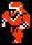
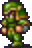
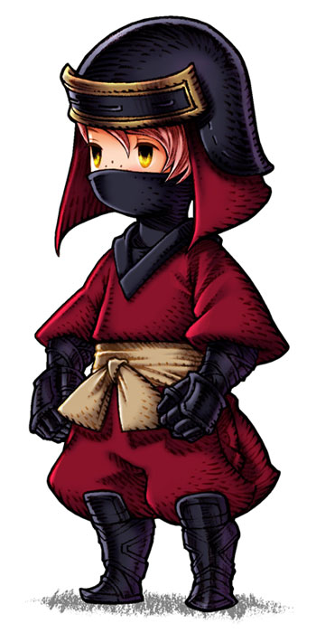
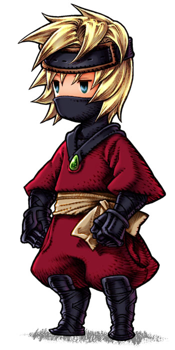
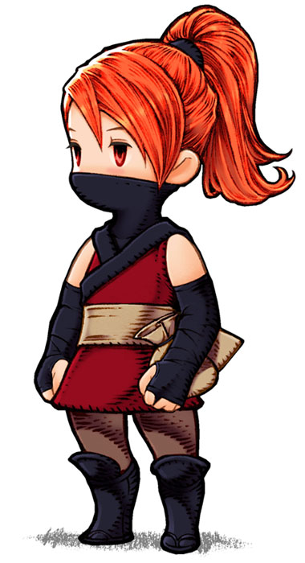
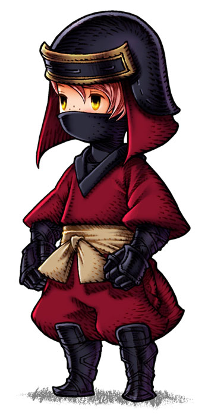
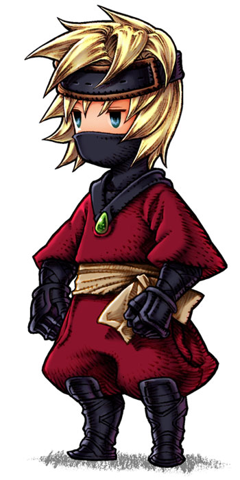
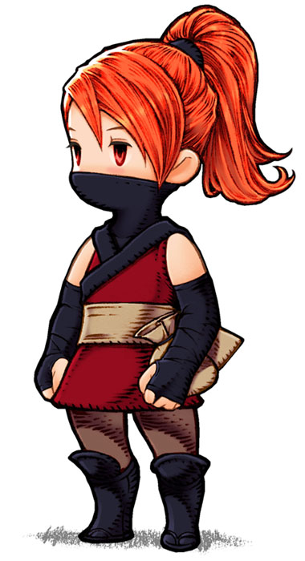

|  |
| NAME: Ninja |
| OVERVIEW: Evolves from Thief. He knows some Black Magic, similar to a Dark Knight. |
| WEAPONS: Bane Sword, Coral Sword, Defense Sword, Dragon Sword, Falchion, Flame Sword, Giant Sword, Ice Sword, Long Sword, Masamune, Rapier, Rune Sword, Sabre, Scimitar, Short Sword, Silver Sword, Sun Sword, Vorpal, Were Sword, Cat Claw, Katana, Large Dagger, Silver Knife, Small Dagger, Great Axe, Hand Axe, Light Axe, Silver Axe, Iron Staff, Power Staff, Wooden Staff, Iron Hammer, Silver Hammer, Thor's Hammer, Iron Nunchuk, Wooden Nunchuk |
| ATTRIBUTES: Average strength, high agility, high luck, low magic |
MAGIC:
Black Magic: Fire, Lock, Slep, Lit, Dark, Slow, Tmpr, Ice, Fir2, Lok2, Hold, Lit2, Conf, Fast, Slp2, Ice2 |
|
 Characters
Characters Places
Places Stories
Stories Species
Species Organizations
Organizations Glossary
Glossary Transportation
Transportation Monsters
Monsters Jobs
Jobs Summons
Summons Items
Items Magic/Skills
Magic/Skills Weapon Types
Weapon Types In-Crossovers
In-Crossovers Ex-Crossovers
Ex-Crossovers Release Dates
Release Dates Name Origins
Name Origins Famous Moments
Famous Moments Music Database
Music Database Features
Features Game Help
Game Help Game Evolution
Game Evolution Square Art
Square Art Fan Flash
Fan Flash Final Fantasy Forums
Final Fantasy Forums Updates
Updates Site Info
Site Info Feedback
Feedback Full Index
Full Index Links
Links Staff
Staff 
